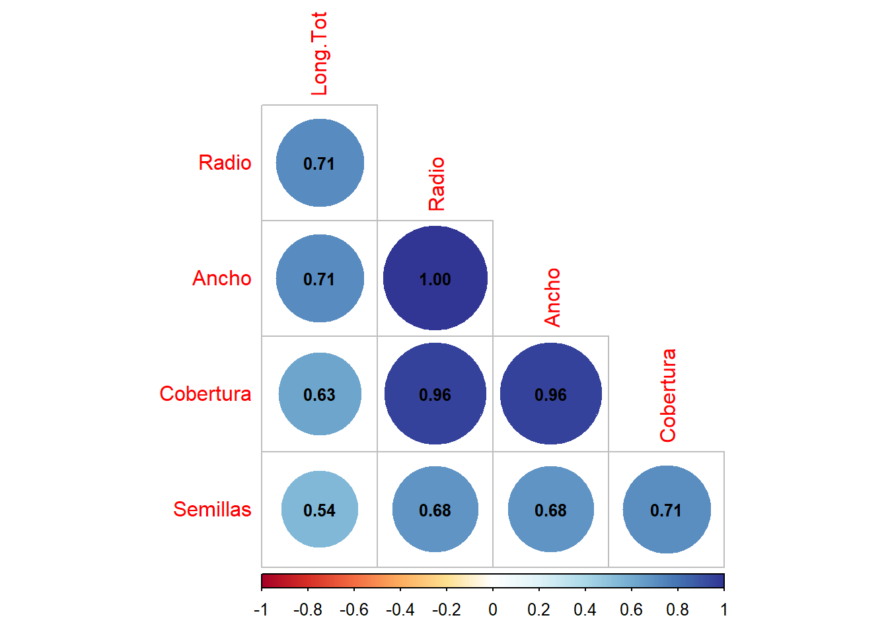
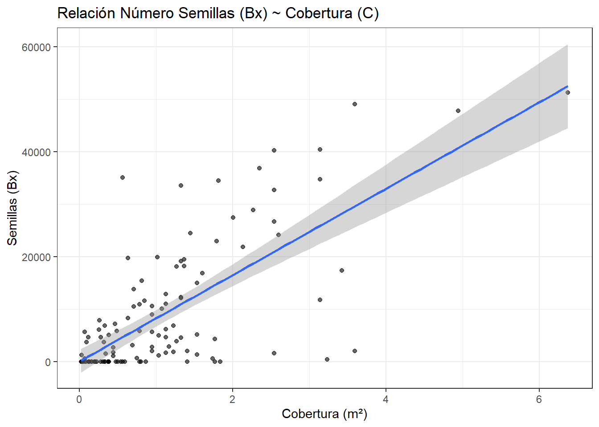
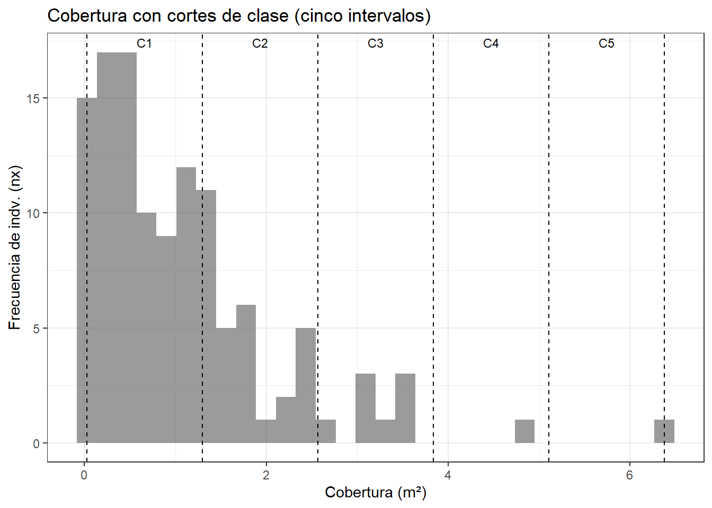
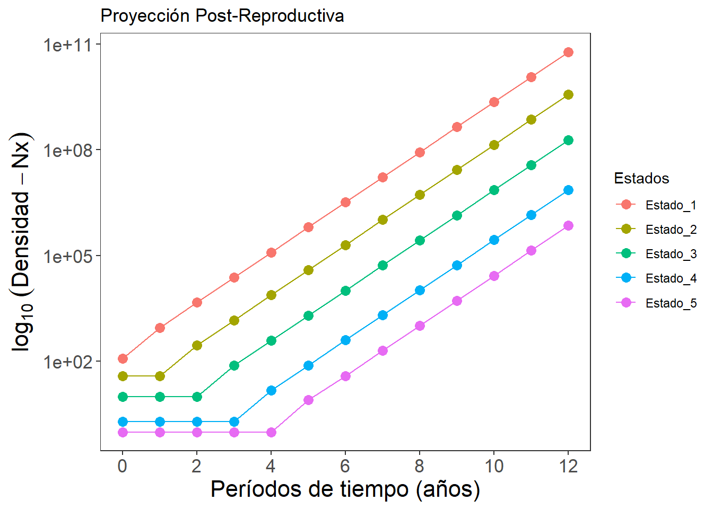
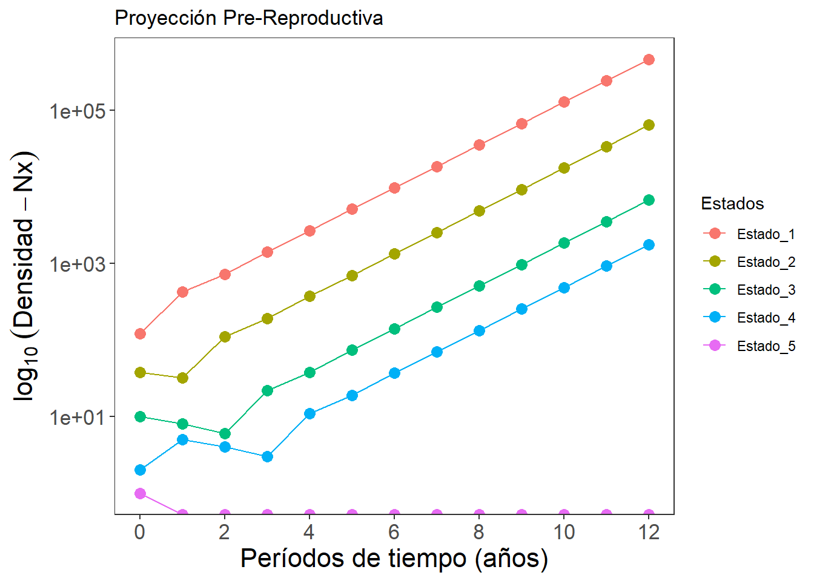

Código
suppressPackageStartupMessages({
library(tidyverse)
library(readxl)
library(dplyr)
library(ggplot2)
library(broom)
library(kableExtra)
library(corrplot) # Figuras de elipses
})Los profesionales dedicados a la biología de la conservación, al control deespecies introducidas o a la modelación ecológica de poblaciones, requieren de herramientas numéricas que les permitan organizar sus datos de forma adecuada en “tablas de vida”, resumiendo información relacionada a la densidad, supervivencia, mortalidad o fecundidad de los individuos en diferentes clases de estado o de Estado.
Con esta información se pueden calcular diferentes indicadores que miden la estructura y el estado de las poblaciones, en sus tasas vitales, incluidas graficas de supervivencia y de ciclos de vida; estos últimos se puede visualizar el comportamiento de las poblaciones en cuanto a su supervivencia y fecundidad por estados. Adicionalmente se puede proyectar el crecimiento de la población en cada estado o Estado, a partir de esquemas matriciales como los propuestos a mediados del siglo XX por Leslie y Lefkovitch (Caswell, 2001).
A partir de estas matrices y algunas operaciones algebraicas, es posible resolver preguntas de investigación orientadas al patrón ecológico y aumento demográfico de poblaciones animales y/o vegetales, en diferentes periodos de tiempo futuro (días, semanas, años, dependiendo de la tasa de crecimiento de la población).
El siguiente ejercicio está orientado a la evaluación demográfica de una muestra de una población de Calotropis procera, ubicada en el campus de la Universidad del Magdalena, la cual se encuentra en su fase reproductiva, lo cual favorezca la evaluación de atributos reproductivos.
1) Construir una tabla de vida estática de la muestra censada de Calotropis procera.
2) Determinar el parámetro morfológicos o de estado que mejor se correlaciona con la reproducción de esa especie.
3) Realizar una proyección multi-estado de la población en el tiempo, para aproximar las densidades por clases de estado en periodos futuros.
Se realiza un reconocimiento del área de estudio en la búsqueda de los individuos de la especie a censar, teniendo en cuenta los siguientes criterios: (1) frecuencia de aparición significativa, (2) variabilidad de tamaños o coberturas, (4) se encuentren en fase reproductiva, con flores y frutos.
Posteriormente se escogen al azar 120 individuos (plántulas, juveniles o adultos) de la muestra a censar (Calotropis procera). A cada individuo se le toman algunas mediciones que se asocian con su estado de crecimiento y que permitien tabular sus datos por clases de tamaño (ej. Altura total, cobertura promedio por mediciones de diámetros). Adicionalmente se realiza una estimación del número total de semillas, a partir de una muestra evaluada.
La construcción de la tabla de vida y el modelo de estructura de estado, es muy similar al del ejercicio con los datos de Gotelli (2002), con las siguientes diferencias:
El censo no es por Estadoes, sino por estados de crecimiento.
Para calcular la densidad de individuos (\(N_x\)) se requiere elaborar una cohorte ficticia, basada en las frecuencias de individuos censadas (\(n_x\)).
No se cuenta con el dato de maternidad (\(m_x\)), por lo que hay que hallarla con los datos de \(B_x\) netos.
A continuación se realizará el paso a paso de cada uno de estos estimadores
Nota importante:
Tener en cuenta la tasa de germinación de semillas (supervivencia \(s_0\)), reportada por Taghvaei (2012), en su tabla 2, reporta un porcentaje de germinación de 0.123%, lo cual debe aplicarse al número de semillas de la tabla de vida (Bx) (criterio poblcional).
Objetivo de esta primera parte (Selección de variable de estado): se parte de los datos crudos para (i) comparar variables de estado que expliquen la producción total de semillas (Bx = Semillas), (ii) elegir la mejor (Se escogerá la Cobertura), (iii) definir 5 clases de cobertura con ancho fijo (5 clases para resumir la tabla de vida a solo 5 filas)
suppressPackageStartupMessages({
library(tidyverse)
library(readxl)
library(dplyr)
library(ggplot2)
library(broom)
library(kableExtra)
library(corrplot) # Figuras de elipses
})Las variables utilizadas se usan con fines didácticos, pero en un trabajo más detallado, deberían considerarse los siguientes apsectos:
Caso de las clases o rangos de estados, tener en cuenta lo siguiente:
Considerar criterios más biológicos como las asociaciones con aspectos fenológicos de los individuos, que pueden afectar de manera más directa a la dinámica reproductiva de esta especie.
Contrastar el método de ancho fijo por intervalos de clases, con otros más flexibles como los cuantiles.
Elección de la variable de estado:
Adicional a las regresiones lineales, se puede probar regresiones no lineales (ej. Loess o suavisadas), que pueden ajustarse mejor a la naturaleza d elos datos.
Incluir un análisis de colinealidad entre las variables de estado, debido a la redundancia que puede haber entre algunas de las utilizadas (ej: Radio y Diámetro).
Temporalidad del estudio:
La base de datos se puede descargar en el siguiente enlace: datos_calot.xlsx.
datos <- readxl::read_excel("datos_calot.xlsx",
sheet = "Datos_campo") %>%
mutate(
across(c(Long.Tot, Ancho, Radio,
Cobertura, Semillas), as.numeric))
# Valor mínimos y máximos de coberturas
Cmin <- min(datos$Cobertura, na.rm = TRUE)
Cmax <- max(datos$Cobertura, na.rm = TRUE)
ancho <- (Cmax - Cmin) / 5
# Cinco intervalos => seis clases de cobertura
cortes <- seq(Cmin, Cmax, length.out = 6)
etq <- paste0("C", 1:5)
interval <- paste0(sprintf("%.2f", cortes[-6]),
" - ", sprintf("%.2f", cortes[-1]))
# Mostrar la tabla inicial
head(datos) %>%
kbl(caption = "Datos de campo") %>%
kable_classic(full_width = FALSE)| Individuo | Long.Tot | Ancho | Radio | Cobertura | Semillas |
|---|---|---|---|---|---|
| 1 | 240 | 180 | 90 | 2.54340 | 32704 |
| 2 | 210 | 160 | 80 | 2.00960 | 27500 |
| 3 | 210 | 150 | 75 | 1.76625 | 4308 |
| 4 | 190 | 110 | 55 | 0.94985 | 5720 |
| 5 | 220 | 90 | 45 | 0.63585 | 19764 |
| 6 | 210 | 140 | 70 | 1.53860 | 5216 |
El objetivo de este paso es encontrar la variable de estado que mejor se correlaciona con la variable reproductiva (Bx), para lo cual se realizarán regresiones exploratorias e inferenciales, sin detallar aspectos como los supuestos de estas pruebas, dado a que el enfoque de este ejercicio es más cualitativo. Se inicia con una figura exploratoria en la que se correlacionan las cuatro variables de estado (Longitud, Radio, Diámetro y Cobertura) con la variable reproductiva (Bx: número de semillas).
# Matriz de correlación
M <- cor(datos[,2:6]) # Matriz de Correlación (M)
corrplot(M, method = "circle", # Correlaciones con circulos
type = "lower", insig="blank", # Forma del panel
order = "AOE", diag = FALSE, # Ordenar por nivel de correlación
addCoef.col ="black", # Color de los coeficientes
number.cex = 0.8, # Tamaño del texto
col = COL2("RdYlBu", 200)) # Transparencia de los circulos
En las correlaciones realizadas, se observa redundancia entre algunas variables de estado como el radio y el ancho (coeficiente de correlación de Pearson: 1), lo cual indica que las dos aportan la misma información al análisis. En cuanto a las relaciones de las variables de estado con Bx (número de semillas), la Cobertura es la variable más relacionada (Pearson: 0.71).
A continuación, se ajustarán regresiones lineales simples de las variables de estado vs. Semillas y compararán con el estadístico R².
vars_estado <- c("Long.Tot", "Ancho", "Radio", "Cobertura")
cmp <- lapply(vars_estado,
function(v) {
modelo <- lm(reformulate(v, "Semillas"), data = datos)
glance(modelo) %>%
mutate(variable = v) }) %>%
bind_rows() %>%
select(Variable = variable,
R.cuadrado = r.squared,
Valor.p = p.value,
AIC, BIC, gl.residual = df.residual) %>%
arrange(desc(R.cuadrado))
kbl(cmp, digits = 2,
caption = "Comparación de R² para # Semillas ~ Variables de estado") %>%
kable_classic(full_width = FALSE)| Variable | R.cuadrado | Valor.p | AIC | BIC | gl.residual |
|---|---|---|---|---|---|
| Cobertura | 0.50 | 0 | 2521.97 | 2530.33 | 118 |
| Ancho | 0.47 | 0 | 2530.61 | 2538.97 | 118 |
| Radio | 0.47 | 0 | 2530.61 | 2538.97 | 118 |
| Long.Tot | 0.29 | 0 | 2564.53 | 2572.90 | 118 |
# Elección de la mejor variable de estado: cobertura
mejor_var <- dplyr::first(cmp$Variable)
message("Mejor variable por R²: ", mejor_var)Mejor variable por R²: CoberturaEn el conjunto provisto, Cobertura presenta el R² más alto ⇒ será la variable de estado para definir las clases de estado en la tabla de vida.
ggplot(datos, aes(x = Cobertura, y = Semillas)) +
geom_point(alpha = 0.6) +
geom_smooth(method = "lm", se = TRUE) +
theme_bw() +
labs(x = "Cobertura (m²)",
y = "Semillas (Bx)",
title = "Relación Número Semillas (Bx) ~ Cobertura (C)") 
Se observa bastante dispersión en la relación graficada, debido a que la regresión lineal entre estas dos variables es muy débil. A pesar que continuará el ejercicio con esta variable de estado, sería importante visualizar otro tipo de regresiones, ej. las suavizadas (loess).
Para los intervalos de clases de coberturas, se usará al ancho fijo con cinco intervalos, anclado en el mínimo observado:
\(\text{ancho} = \frac{\max(C) - \min(C)}{5}\)
Esto reproduce el intervalo de cobertura definido (≈ 1.2701 metros). Se fijan los cortes o intervalos de cobertura con
include.lowest = TRUEy los extremos cerrados a la derecha (right = TRUE) para garantizar reproducibilidad.
# 1. Valor mínimo de Cobertura en el censo
Cmin <- min(datos$Cobertura, na.rm = TRUE)
# 2. Valor máximo de Cobertura en el censo
Cmax <- max(datos$Cobertura, na.rm = TRUE)
# 3. Ancho de clase dividiendo el rango total (Cmax - Cmin) en 5 partes
ancho <- round(((Cmax - Cmin) / 5),4)
ancho # Visualiza el ancho para verificar[1] 1.2701# 4. Construir los "cortes" o límites de los intervalos (Seis rangos para cinco intervalos definidos)
cortes <- seq(Cmin, Cmax, length.out = 6)
# 5. Crear etiquetas (C1, ... , C5) para identificar las 5 clases
etqs <- paste0("C", 1:5)
# 6. Clasificar los individuos en las 5 clases de Cobertura
# - breaks = cortes define los intervalos
# - labels = etqs asigna etiquetas C1..C5
# - include.lowest = TRUE incluye el valor mínimo en la primera clase
# - right = TRUE indica que los intervalos son cerrados en la derecha
datos <-
datos %>%
mutate(Clase_C = cut(Cobertura,
breaks = cortes,
labels = etqs,
include.lowest = TRUE,
right = TRUE))
# 7. Verificar qué niveles de clase se crearon
levels(datos$Clase_C)[1] "C1" "C2" "C3" "C4" "C5"Como información complementaria, se puede usar a Clase_C como una variable que discrimine a cada individuo censado.
# Cargar nuevamente la base de datos
datos <-
readxl::read_excel("datos_calot.xlsx",
sheet = "Datos_campo") %>%
mutate(across(c(Long.Tot, Ancho, Radio,
Cobertura, Semillas), as.numeric))
# Valor mínimos y máximos de coberturas
Cmin <- min(datos$Cobertura, na.rm = TRUE)
Cmax <- max(datos$Cobertura, na.rm = TRUE)
ancho <- (Cmax - Cmin) / 5
# Cinco intervalos => seis clases de cobertura
cortes <- seq(Cmin, Cmax, length.out = 6)
etq <- paste0("C", 1:5)
interval <- paste0(sprintf("%.2f", cortes[-6]),
" - ", sprintf("%.2f", cortes[-1]))
# Clasificación de cada observación por su nivel de cobertura
datos <-
datos %>%
mutate(Clase_C = cut(Cobertura,
breaks = cortes,
labels = etq,
include.lowest = TRUE,
right = TRUE))
# Primeras cuatro filas de los datos distriminados por coberturas
kbl(head(datos,4),
digits = 2,
caption = "Datos crudos discriminados por coberturas") %>%
kable_classic(full_width = FALSE)| Individuo | Long.Tot | Ancho | Radio | Cobertura | Semillas | Clase_C |
|---|---|---|---|---|---|---|
| 1 | 240 | 180 | 90 | 2.54 | 32704 | C2 |
| 2 | 210 | 160 | 80 | 2.01 | 27500 | C2 |
| 3 | 210 | 150 | 75 | 1.77 | 4308 | C2 |
| 4 | 190 | 110 | 55 | 0.95 | 5720 | C1 |
# Distribución de frecuencias de acuerdo a las clases de cobertura
ggplot(datos, aes(x = Cobertura)) +
geom_histogram(bins = 30, alpha = 0.6) +
geom_vline(xintercept = cortes, linetype = 2) +
labs(x = "Cobertura (m²)",
y = "Frecuencia de indv. (nx)",
title = "Cobertura con cortes de clase (cinco intervalos)") +
theme_bw()+
annotate("text",
x = cortes[-6] + diff(cortes)/2,
y = Inf, vjust = 1.5,
label = etqs, size = 3)
La figuara muestra que los individuos se concentran en coberturas bajas (C1, seguida de C2).
\(n_x\) : Frecuencia de individuos de Calotropis censados por cada clase de cobertura
\(B_x\ poblacional\): (total de semillas por clase * \(s_0\)). Donde \(s_0\): 0.0123
\(B_x\) (número de reclutas exitósos por cada clase de estado o cobertura), se obtiene multiplicando el total de semillas producidas en toda la clase por la probabilidad de reclutamiento o de supervivencia documentada en la literatura \(s_0\) indica cuántos reclutas (a partir de las semillas contadas) son viables de toda la clase, en el censo actual. Se usará solo el 0.123% de las semillas censadas (validado por referentes bibliográficos), asumiendo que solo este porcentaje de semillas tendrá la posibilidad de germinar y aportar al aumento de la muestra evaluada (potencial de reclutamiento o fecundidad neta efectiva).
\(n_x\) se utilizará posteriormente para calcular la cohorte ficticia ($N_x$) que es típica de las tablas de vida estáticas, como las de este ejercicio.
Objetivo de esta segunda parte (Tabla de Vida: tabla_v1): se parte de la variable de estado seleccionada (cobertura de los individuos) para (i) construir la tabla tabla_v1 con Nx (frecuencia por clases de la cohorte ficticia), (ii) calcular a Bx neta representativa por clase. Esta tabla de vida servirá de base para la modelación matricial en la Parte 3.
# Definir los cortes de clase nuevamente (para asegurar consistencia)
Cmin <- min(datos$Cobertura, na.rm = TRUE)
Cmax <- max(datos$Cobertura, na.rm = TRUE)
ancho <- (Cmax - Cmin) / 5
cortes <- seq(Cmin, Cmax, length.out = 6) # 6 bordes para 5 intervalos
# Crear etiquetas de intervalos con dos decimales
intervalos <-
paste0(
sprintf("%.2f", cortes[-length(cortes)]), " - ",
sprintf("%.2f", cortes[-1])
)
# Supervivencia de las semillas, tomada de la bibliografía (0.123%)
s0 <- 0.00123 # 0.123%
# 1) Totales de semillas por clase (visión poblacional)
tabla_v <-
datos %>%
group_by(Clase_C) %>%
summarise(
# mapea C1..C5 a su rango
Clases = intervalos[as.integer(first(Clase_C))],
nx = n(), # Frecuencia de indv. censados por cobertura
Tot_semillas = sum(Semillas, na.rm = TRUE),
.groups = "drop",
) %>%
arrange(Clase_C) %>%
mutate(Bx = round(Tot_semillas * s0, 0)) # Bx exitoso
# Tabla
kbl(tabla_v, digits = 2,
caption = "Tabla de vida con Tot_semillas y Bx (poblacional por clase)") %>%
kable_classic(full_width = FALSE)| Clase_C | Clases | nx | Tot_semillas | Bx |
|---|---|---|---|---|
| C1 | 0.03 - 1.30 | 82 | 342517 | 421 |
| C2 | 1.30 - 2.57 | 28 | 463393 | 570 |
| C3 | 2.57 - 3.84 | 8 | 180100 | 222 |
| C4 | 3.84 - 5.11 | 1 | 47811 | 59 |
| C5 | 5.11 - 6.38 | 1 | 51297 | 63 |
Se puede validar que se cuente con los 120 registros del censo y la repartición de datos por cada uno de los cinco intervalos de cobertura. Esta información servirá de insumo para construir la columna de coberturas (Clase_C) en la tabla de vida.
# Chequeo de los valores
tabla_v$nx; [1] 82 28 8 1 1sum(tabla_v$nx)[1] 120A continuación, se construye la tabla de vida con los estimadores gerales hasta llegar a la esperanza de vida (\(e_x\)). En los pasos siguientes se determinarán algunos estimadores más específicos como los vectores de distribución estable (\(c_x\)), el valor reproductivo (\(v_x\)) y las fecundidades pre y post reproductivas (\(F_{pre}\) y \(F_{post}\)), los cuales serán requeridos para completar la modelación matricial multi-estado.
Convenciones y definiciones (tabla estática por clases \(x=1,\dots,k\)):
Supervivencia relativa en la clase \(x\):
\(\ l_x = \dfrac{N_x}{N_0}\),
Donde,
\(N_x\) es la cohorte ficticia al inicio de la clase \(x\)
\(N_0=\sum_{i=1}^k n_i\). No es la sumatoria de las frecuencias o del número de individuos censados.
Pérdida entre clases (muertes relativas):
\(d_x = l_x - l_{x+1}\) (para \(x<k\)) y por convención \(,d_k=l_k\).
Donde:
\(d_x\) es la pérdida entre el inicio de \(x\) y el inicio de \(x{+}1\).
Probabilidad de muerte en la clase \(x\):
\(q_x = \dfrac{d_x}{l_x}\), (si \(l_x>0\))
Convenciones de borde:
si \(x=k\) y \(l_k>0\), \(q_k=1\); si \(l_x=0\), definir \(q_x=0\) para evitar indeterminación.
\(l_x\) y \(q_x\) describen proporciones al inicio de la clase \(x\).
Plantulas-tiempo (sobrevivientes promedio) en la clase \(x\):
\(L_x \approx \dfrac{N_x + N_{x+1}}{2}\)
asumiendo mortalidad aproximadamente lineal dentro del intervalo. En la última clase:
\(L_k \approx \dfrac{N_k}{2}\).
Donde:
\(L_x\) mide el promedio de sobrevivientes dentro del intervalo \(x\) (área bajo la curva).
Tiempo-vida restante acumulado a partir de \(x\):
\(T_x = \displaystyle\sum_{j=x}^{k} L_j\)
Donde:
\(T_x\) es el acumulado de \(L_j\) desde \(x\) hasta la última clase.
Esperanza de vida al inicio de \(x\):
\(e_x = \dfrac{T_x}{N_x}\).
Donde:
\(e_x\) expresa el tiempo-vida esperado (en “unidades de intervalo”) para un individuo que entra a aportar a \(x\).
\(e_x\) está espresada en el número de clases que pueden avanzar los individuos de cada intervalo definido (ej. \(e_0\): 0.92, indica que los índividuos de esa clase en promedio puede sobrevivir al rededor de una clase más).
En caso que \(e_x\) se quiera expresar en términos de m² de cobertura que pueden avanzar, se debe multiplicar por el ancho de los intervalos 𝑤= 1.270146 m². En este sentido:
\(e_x\) (cobertura)=\((N_x/T_x) × w\)
# Mapear etiquetas C1..C5 a los intervalos de cobertura
intervalo <- setNames(interval, etq)
# tabla_v1, cuenta con Clase_C, Clases, nx, tot_semillas y Bx
# tabla_v3, calcula el resto de estimadores
tabla_v1 <-
tabla_v %>%
mutate(
x = as.integer(Clase_C),
Nx = rev(cumsum(rev(nx))), # cohorte ficticia
N0 = first(Nx),
`Nx+1` = lead(Nx, default = 0),
mx = Bx / Nx,
`mx+1` = lead(mx, default = 0), # Requerido para Fx post
Sx = `Nx+1` / Nx,
lx = Nx / N0,
`lx+1` = lead(lx, default = 0),
dx = lx - `lx+1`,
qx = if_else(lx > 0, dx / lx, NA_real_),
px = 1 - qx,
`Nx+1` = lead(Nx, default = 0),
Lx = (Nx + `Nx+1`) / 2,
Tx = rev(cumsum(rev(Lx))),
ex = Tx / Lx,
`lx.mx` = lx * mx,
`x.lx.mx` = x * `lx.mx`
)
#---
tabla_v1 %>%
select(x, Clase_C, Clases, nx, Nx, Bx, lx, dx, qx, px, Sx,
`lx.mx`, `x.lx.mx`, Lx, Tx, ex) %>%
kbl(digits = 2,
caption = "Tabla de vida hasta eₓ") %>%
kable_classic(full_width = FALSE)| x | Clase_C | Clases | nx | Nx | Bx | lx | dx | qx | px | Sx | lx.mx | x.lx.mx | Lx | Tx | ex |
|---|---|---|---|---|---|---|---|---|---|---|---|---|---|---|---|
| 1 | C1 | 0.03 - 1.30 | 82 | 120 | 421 | 1.00 | 0.68 | 0.68 | 0.32 | 0.32 | 3.51 | 3.51 | 79.0 | 111.0 | 1.41 |
| 2 | C2 | 1.30 - 2.57 | 28 | 38 | 570 | 0.32 | 0.23 | 0.74 | 0.26 | 0.26 | 4.75 | 9.50 | 24.0 | 32.0 | 1.33 |
| 3 | C3 | 2.57 - 3.84 | 8 | 10 | 222 | 0.08 | 0.07 | 0.80 | 0.20 | 0.20 | 1.85 | 5.55 | 6.0 | 8.0 | 1.33 |
| 4 | C4 | 3.84 - 5.11 | 1 | 2 | 59 | 0.02 | 0.01 | 0.50 | 0.50 | 0.50 | 0.49 | 1.97 | 1.5 | 2.0 | 1.33 |
| 5 | C5 | 5.11 - 6.38 | 1 | 1 | 63 | 0.01 | 0.01 | 1.00 | 0.00 | 0.00 | 0.52 | 2.62 | 0.5 | 0.5 | 1.00 |
Al analizar los resultados de la tabla de vida de la muestra censada de Calotropis procera, se observa un patrón de fuerte mortalidad en los primeros estados de cobertura. El valor de supervivencia \(l_x\) indica que, de todos los individuos que inician en la cohorte ficticia, apenas un 32% sobrevive hasta la segunda clase, y menos del 10% alcanza la tercera. Este comportamiento refleja una estrategia de vida típica de especies con altas tasas de mortalidad temprana, donde solo unos pocos individuos logran establecerse y crecer (trade-off con alta fecundidad que compensa la baja supervivencia).
La supervivencia condicional (\(S_x\)) refuerza esta idea: en la primera clase, la probabilidad de que un individuo pase al siguiente estado es de apenas 0.32 (32%), y en las siguientes clases los valores se mantienen bajos (0.20–0.26), lo que muestra que los cuellos de botella en la supervivencia no se limitan a la etapa inicial. Incluso en los estados avanzados, como lode de coberturas C4, la probabilidad de transición sigue siendo modesta (0.50).
En cuanto a la esperanza de vida (\(e_x\)), los valores se mantienen alrededor de 1.3 clases para casi todos los estados, lo que significa que, en promedio, un individuo que ingresa a cualquier clase de cobertura apenas puede esperar sobrevivir a una clase siguiente. Esto sugiere que la trayectoria de vida de los individuos es corta y que pocos alcanzan estados longevos o adultos.
Paradójicamente, la especie mantiene un alto número de semillas potencialmente exitoso (\(B_x\)), lo que compensa la mortalidad elevada. Este patrón de “muchos descendientes, poca supervivencia” corresponde a una estrategia colonizadora que le permite a Calotropis procera expandirse rápidamente en ambientes perturbados o abiertos. Así, aunque la mayoría de los individuos mueren pronto, unos pocos logran reclutarse y sostener el crecimiento de la población invasora.
En este paso Se utilizan las columnas finales de la anterior tabla de vida, para calcular los estadísticos demográficos generales, que brindan información de cómo aumenta o disminuye la población en el tiempo.
Primero se calculan los siguientes estadísticos generales:
\(R_0 = \sum l_x m_x\); Tasa reproductiva neta
\(T = \dfrac{\sum x,l_x m_x}{\sum l_x m_x}\); Tiempo Generacional (Tg)
\(r_{\text{est}} = \dfrac{\ln R_0}{T}\); Tasa cre crecimiento istantáneo estimada
\(t_{dup}=\frac{ln2}{r}\) intervalos de cobertura que tarda la muestra censada en duplicarse.
Las siguientes ecuaciones permiten generar columnas adicionales en la tabla de vida, que son requeridas para el cálculo de los estadísticos demográficos generales como \(r\) y \(\lambda\). La ecuación de euler - lotka, permite encontrar un valor de \(r\) tal que la sumatoria de los estimadores de supervivencia y de maternidad sea igual a 1, como se muestra a continuación:
\(\;e^{-r. x};\) y Formula requerida para la ecuación de euler
\(\;e^{-r. x}.l_x m_x\); Formula requerida para la ecuación de euler
\(\sum_{x} l_x, m_x, e^{-r x} = 1\) Ecuación de euler
# 1. Estadísticos generales
Ro <- sum(tabla_v1$`lx.mx`, na.rm = TRUE) # Tasa reproductiva neta
Tg <- sum(tabla_v1$`x.lx.mx`, na.rm = TRUE) / Ro # Tiempo generacional
r_est <- log(Ro) / Tg # r estimado
# 2. Función de euler
euler <-
function(rr)
sum(tabla_v1$lx * tabla_v1$mx *
exp(-rr * tabla_v1$x), na.rm = TRUE) - 1
# 3. Cálculo de r exacto
r <- uniroot(euler, interval = c(-2, 2))$root
r <- round(r,3)
# 4. Cálculo de lambda
lambda <- exp(r)
# 5. Organización de los estadísticos generales
estad <-
tibble::tibble(
`Tasa reprod. neta (Ro)` = Ro,
`Tiempo generacional (T)` = Tg,
`r_est = ln(R0)/T` = r_est,
`r (Euler)` = r,
`λ = exp(r)` = lambda
)
# 6. Tabulación
estad %>%
mutate(across(everything(), ~ round(., 3))) %>%
kbl(caption = "Estadísticos demográficos generales") %>%
kable_classic(full_width = FALSE)| Tasa reprod. neta (Ro) | Tiempo generacional (T) | r_est = ln(R0)/T | r (Euler) | λ = exp(r) |
|---|---|---|---|---|
| 11.125 | 2.081 | 1.158 | 1.532 | 4.627 |
Se obtienen los siguientes estadísticos demográficos generales:
Tasa reproductiva neta: \(R_0 \approx 11.125\)
Cada individuo, en promedio, contribuye con alrededor de 11 reclutas exitosos a lo largo de su trayectoria de cobertura.
Tiempo generacional: \(T \approx 2.081\)
En promedio, transcurren dos clases de cobertura entre el nacimiento y la producción de nuevos reclutas exitosos.
Tasa instantánea de crecimiento: \(r \approx 1.532\); indiv./indiv.estado
Esta tasa implica que la muestra evaluada aumenta de manera continua a una tasa aproximada del 153% por intervalo de cobertura.
Tasa finita de crecimiento: \(\lambda \approx 4.627\).
Lo anterior indica que en cada intervalo de cobertura, la población se multiplica po 4.63, lo cual implica que el aumento finito (\(|1-\lambda|*100\)) \(\approx\) 363%.
Tiempo de duplicación: \(t_{dup}=\frac{ln2}{r} ≈\frac{0.693}{1.532}≈0.45\) intervalos de cobertura.
Lo cual indica que esta muestra censada de Calotropis se puede duplicar en menos de medio intervalo de clase de cobertura. Esto indica que antes que los individuos de una clase de cobertura pasen a la siguiente, ya la muestra total ya se ha duplicado (por ejemplo, de 120 individuos a 240 individuos).
Esto demuestra un perfil típico de especies invasoras con alta fecundidad, rápido tiempo generacional y tasas de crecimiento explosivas, lo que facilita la expansión de Calotropis procera en ambientes perturbados.
Este procedimiento es requerido para realizar la modelación matricial de estructura de estados, utilizando como base a la matriz de Leslie - \(L\), que al multiplicarse por el vector de densidades (\(N_x\)), permite proyectar el aumento o disminución de la población en periodos posteriores. \(L\) es una matriz constante y para construirla se requiere contar con los vectores de fecundidad (\(F_x\)) - que representan los valores de la primera fila de la matriz y los vectores de supervivencia (\(S_x\)) - Que representan los valores de la sub-diagonal - el resto de valores son ceros. Además, hay que tener en cuenta si el censo es pre o post reproductivo, dado a que cada uno, genera una ecuación específica para \(F_x\).
Fecundidad pre-reproductiva: \(F_{pre} = S_0 * m_x\), con \(S_0 = S_x\) en el estado de cobertura 0 (supervivencia de crías hasta el siguiente censo, lo cual coresponde a un valor constante).
Fecundidad post-reproductiva: \(F_{post} = S_x * m_{x+1}\).
Los sigientes vectores (\(v_x\) y \(c_x\)) también se calculan a partir de la tabla de vida elaborada en los pasos anteriores (tabla_v). En pasos posteriores, se volverán a calcular algunos estadísticos demográficos como \(v_x\) y \(c_x\) pero de forma matricial, para compararos con los calculados a continuación.
Ecuaciones de la distribución o estructura estable de estados \(c_{(x)}\)
\(l_x.e^{-r x}\)
\(c_{(x)} = (l_x.e^{-r.x}) / \sum(l_x.e^{-r.x})\) (estructura estable).
Ecuaciones del valor reproductivo \(v_{(x)}\)
\(e^{rx}/lx\)
\(e^{-ry}.l_y.m_y\) donde \(y = x + 1\)
\(\sum(e^{-ry}.l_y.m_y)\)
\(v_{(x)} = (e^{rx}/l_x) .\sum(e^{-ry}.l_y.m_y)\).
\(v_{(x)}.norm\) con \(v_{(0)}=1\) Se normaliza a \(v_{(x)}\) para que el primer valor = 1
Objetivo de esta tercera parte (modelación matricial de estructura de estados): se parte de la tabla de vida construida hasta la esperanza de vida - \(e_x\) para, (i) calcular los estimadores de fecundidad pre y post reproductiva, (ii) contruir la matriz de Leftkovitch con los dos tipos de censos, (iii) realizar la pryección multi-estado a futuro.
# Primer valor de S_x, para calcular S_0
S0 <- if (any(tabla_v1$x == 0)) {
tabla_v1$Sx[which(tabla_v1$x == 0)[1]]
} else {
tabla_v1$Sx[1]
}
# Tabla de vida para estimar Fx pre y post, cx y vx
tabla2 <-
tabla_v1 %>%
mutate(
# 1.) Cálculo de F ´re y post
Fpre = S0 * mx, # Fecundidad pre reprod.
Fpost = Sx * `mx+1`, # Fecundidad post reprod.
# 2.) Cálculo de distrib. estable c(x)
`lx.e_rx` = lx * exp(-r * x), # Estimador de cx
cx = `lx.e_rx` / sum(`lx.e_rx`,
na.rm = TRUE), # cx
# 3.) Cálculo del valor reproductivo v(x)
erx_lx = exp(r * x) / lx,
`e_ry_ly_my` = exp(-r * x) * lx * mx,
`Se_ry_ly_my` = rev(cumsum(rev(`e_ry_ly_my`))),
vx = erx_lx * `Se_ry_ly_my`,
vx_norm = vx / vx[1]) %>%
# Organización de la segunda tabla de vida - tabla2
select(
x, Clase_C, Nx, mx, Sx, # Estimadores iniciales
Fpre, Fpost, # F pre y post
`lx.e_rx`, cx, # Distrib estable c(x)
erx_lx, `e_ry_ly_my`, # Valor reprod. v(x)
`Se_ry_ly_my`, vx, vx_norm
) %>%
mutate(across(where(is.numeric), ~ round(., 3)))
# Impresión de la tabla
kable(
digits = 2,
tabla2,
caption = "Tabla 2 — Estimadores de estructura de estados",
col.names = c(
"x","Clase_C","Nx","mx","Sx",
"F(pre)","F(post)",
"lx.e-rx","c(x)",
"erx/lx","e-ry.(ly.my)",
"Se-ry(ly.my)","v(x)","v(x).norm"
),
escape = TRUE
) %>%
kable_classic(full_width = FALSE)| x | Clase_C | Nx | mx | Sx | F(pre) | F(post) | lx.e-rx | c(x) | erx/lx | e-ry.(ly.my) | Se-ry(ly.my) | v(x) | v(x).norm |
|---|---|---|---|---|---|---|---|---|---|---|---|---|---|
| 1 | C1 | 120 | 3.51 | 0.32 | 1.11 | 4.75 | 0.22 | 0.93 | 4.63 | 0.76 | 1.00 | 4.63 | 1.00 |
| 2 | C2 | 38 | 15.00 | 0.26 | 4.75 | 5.84 | 0.01 | 0.06 | 67.62 | 0.22 | 0.24 | 16.35 | 3.53 |
| 3 | C3 | 10 | 22.20 | 0.20 | 7.03 | 5.90 | 0.00 | 0.00 | 1189.05 | 0.02 | 0.02 | 23.77 | 5.14 |
| 4 | C4 | 2 | 29.50 | 0.50 | 9.34 | 31.50 | 0.00 | 0.00 | 27511.09 | 0.00 | 0.00 | 36.31 | 7.85 |
| 5 | C5 | 1 | 63.00 | 0.00 | 19.95 | 0.00 | 0.00 | 0.00 | 254610.89 | 0.00 | 0.00 | 63.00 | 13.62 |
Los resultados de la Tabla 2 muestran cómo la muestra censada de Calotropis procera combina su fecundidad, su supervivencia y su valor reproductivo para sostener su expansión, bajo el contexto ambiental en el que se encuentra.
En las Fecundidades pre- y post-reproductivas (\(F_{pre}, F_{post}\)) se aprecia un claro contraste entre las clases de cobertura:
En los primeros estados de coberturas (C1–C3), los valores de fecundidad pre-reproductiva son relativamente bajos (1.11, 4.75, 7.03), pero post-reproductiva ya alcanzan cifras más altas (4.75, 5.84, 5.90). Esto significa que incluso los estados juveniles aportan descendencia por su mecanismo sexual, con semillas exitósas.
En la cobertura C4, la fecundidad post-reproductiva se dispara (31.50), señalando que los individuos que logran alcanzar este estado tienen una altísima contribución reproductiva. Finalmente, en la cobertura C5, la fecundidad desaparece (0), lo que corresponde a individuos senescentes o sin aporte reproductivo efectivo. En conjunto, la población combina un inicio reproductivo temprano con un “pico” de fecundidad en estados intermedios–avanzados, lo cual le da plasticidad demográfica para colonizar y persistir.
El vector de distribución estable de estados (\(c_x\)), indica que el mayor aumento a futuro o cuando Calotopis alcance su estabilidad, se concentra en los primeros estados de cobertura (85% en C1, 13% en C2), mientras que las clases superiores apenas retienen una fracción marginal de aumento de individuos (<2%).
Esto refleja que, en condiciones estables, la población estará dominada por individuos pequeños o jóvenes, lo que es coherente con una dinámica de reclutamiento continuo y fuerte mortalidad temprana. Esto además significa que la población tendrá una estructura piramidal: muchos individuos jóvenes y pocos adultos grandes.
El valor reproductivo (\(v_x\)) mide la contribución futura esperada de un individuo en una clase al aumento de la muestra evaluada. En las clases de cobertura C1 y C2 los valores son bajos (6.39 y 18.46), lo que indica que un individuo pequeño tiene aún una expectativa limitada de aporte por mecanismos sexuales o de generación de semillas exitósas.
En las coberturas C3 y sobre todo en C4, los valores se disparan (26.65 y 45.05), indicando que los sobrevivientes a estas etapas tienen un alto potencial de reemplazo y crecimiento de la población. El máximo se alcanza en coerturas C5 (63), pero normalizado (\(v(x).norm = 9.85\)) refleja que, aunque son muy pocos individuos, su valor futuro es enorme en términos de descendencia potencial acumulada. Esta asimetría subraya un punto clave: aunque la población está dominada numéricamente por individuos jóvenes, el motor reproductivo real se concentra en los pocos individuos que logran llegar a clases de mayor cobertura.
Subdiagonal = \(s_x\) (supervivencias x→x+1). Fila superior = Fpre o Fpost. Incluyo nombres de filas/columnas con Estado_1, Estado_2, ….
# Vectores necesarios para construir las matrices
estados <- tabla2$x # Vector con las eades (x)
Fpre <- tabla2$Fpre # Vector de fecundidades pre-reproductivas
Fpost <- tabla2$Fpost # Vector de fecundidades post-reproductivas
Sx <- tabla2$Sx # Vector de probabilidades de supervivencia
k <- length(estados) # Número total de estados (x) en la tabla (longitud del vector estados)
# Matriz de Leslie pre-reproductiva (L_pre)
L_pre <- matrix(0, nrow = k, ncol = k) # Matriz k x k con ceros
L_pre[1, ] <- Fpre # Fecundidades pre-rep en la primera fila
if (k > 1) for (i in 2:k) L_pre[i, i-1] <- Sx[i] # Subdiagonal con Sx+1
# Matriz de Leslie post-reproductiva (L_post)
L_post <- matrix(0, nrow = k, ncol = k) # Matriz k x k con ceros
L_post[1, ] <- Fpost # Fecundidades post-rep en la primera fila
if (k > 1) for (i in 2:k) L_post[i, i-1] <- Sx[i-1] # Subdiagonal con Sx
# Nombres de las filas y columnas de las matrices
dimnames(L_pre) <- list(paste0("Estado_", estados),
paste0("Estado_", estados))
dimnames(L_post) <- list(paste0("Estado_", estados),
paste0("Estado_", estados))
# Imprimir las matrices con kableExtra
kable(L_pre, digits = 2,
caption = "Matriz de Leslie (pre-reproductiva)",
format = "html") %>%
kable_styling(full_width = FALSE)| Estado_1 | Estado_2 | Estado_3 | Estado_4 | Estado_5 | |
|---|---|---|---|---|---|
| Estado_1 | 1.11 | 4.75 | 7.03 | 9.34 | 19.95 |
| Estado_2 | 0.26 | 0.00 | 0.00 | 0.00 | 0.00 |
| Estado_3 | 0.00 | 0.20 | 0.00 | 0.00 | 0.00 |
| Estado_4 | 0.00 | 0.00 | 0.50 | 0.00 | 0.00 |
| Estado_5 | 0.00 | 0.00 | 0.00 | 0.00 | 0.00 |
kable(L_post, digits = 2,
caption = "Matriz de Leslie (post-reproductiva)",
format = "html") %>%
kable_styling(full_width = FALSE)| Estado_1 | Estado_2 | Estado_3 | Estado_4 | Estado_5 | |
|---|---|---|---|---|---|
| Estado_1 | 4.75 | 5.84 | 5.9 | 31.5 | 0 |
| Estado_2 | 0.32 | 0.00 | 0.0 | 0.0 | 0 |
| Estado_3 | 0.00 | 0.26 | 0.0 | 0.0 | 0 |
| Estado_4 | 0.00 | 0.00 | 0.2 | 0.0 | 0 |
| Estado_5 | 0.00 | 0.00 | 0.0 | 0.5 | 0 |
Las dos matrices representan escenarios alternativos para la muestra de 120 individuos censados de Calotropis procera, dependiendo de si la fecundidad es temprana (pre-reproductiva) o es posterior a esta fecundidad (post-reproductiva).
En la Matriz pre-reproductiva (L_pre) Esta versión sobrestima el aporte temprano de la fecundidad (porque todos los estados juveniles contribuyen con fecundidades Fpre en la primera fila), pero corta la transición real desde el estado inicial (C1). Es útil como ejercicio pedagógico para visualizar cómo funcionaría una población sostenida únicamente por fecundidad temprana, pero ecológicamente deja de lado la importancia de la transición inicial.
la primera fila está dominada por valores moderados de fecundidad (\(F_x\): 1.11–19.95), lo cual sugiere que incluso los estados jóvenes pueden aportar reclutas a la población, aunque con valores más bajos que los de la siguiente matriz.
La estructura de la subdiagonal (valores de supervivencia \(S_x\): 0.32, 0.26, 0.20, 0.50) como se analizó en la tabla de vida, indica que la transición entre estados de cobertura es complicada (pocos individuos logran subir de clase). Esto refleja un escenario en el que la muestra evaluada depende de una fecundidad temprana, lo que favorece el reclutamiento masivo y rápido, aun si pocos alcanzan estados adultos.
La Matriz post-reproductiva (L_post) es la forma más consistente con la definición clásica de una matriz de Leslie o Lefkovitch. La primera fila muestra valores de fecundidad mucho más altos y concentrados en estados avanzados (hasta 31.5 en C4). Los estados juveniles (C1–C3) aportan poco, mientras que los individuos grandes son el motor reproductivo real. Esto refleja un escenario en el que el crecimiento poblacional depende críticamente de los pocos individuos que logran llegar a estados adultos, los cuales tienen un enorme potencial reproductivo.
En este orden de ideas, para este tipo post-reproductivo genera resultados más reales, donde la supervivencia desde los juveniles iniciales y la gran fecundidad de los adultos impulsan el aumento de este tipo de poblaciones invasoras. Por su parte, la matriz pre-reproductiva, representa un escenario “teórico” en el que la población se sostiene casi enteramente gracias a la fecundidad temprana, pero no refleja adecuadamente la transición desde el primer estado. Lo anterior indica que un pequeño ajuste en la posición de la subdiagonal (Sx) cambia de forma drástica la historia de vida simulada con estas matrices y, con ello, la interpretación ecológica del modelo.
Paso 1. Cargar el vector de Estadoes \((N_t)\)
# Población inicial (hipotética)
Nt <- tabla_v1$Nx
Nt[1] 120 38 10 2 1# Número de periodos a proyectar en el modelo
t <- 12
t[1] 12Paso 2. Función modelo_pob para automatizar \((N_{(t+1)} = L \cdot N_{(t)})\)
# Funcion (modelo_pob) para modelar la población por las diferentes Estadoes en el tiempo.
# 1) Elementos de la modelación (Matriz de Leslie - L, Vector de Abundancias - Nt y Periodos a modelar - t)
library(purrr) # proporciona set_names()
modelo_pob <- function(L, Nt, t) {
k <- length(Nt)
out <- matrix(NA_real_, nrow = t + 1, ncol = k)
out[1, ] <- Nt
for (i in 1:t) out[i + 1, ] <- L %*% out[i, ]
as.data.frame(out) |>
purrr::set_names(paste0("Estado_", seq_len(k)))
}Paso 3. Simulación de la proyección \((N_{(t+1)} = L\ . N_{(t)})\)
# 1) Usar la función creada para el producto L x Nt
simulacion <- modelo_pob(as.matrix(L_post), Nt, t)
# 2) Crear la columna Tiempo
simulacion <- simulacion %>%
mutate(Tiempo = 0:(nrow(simulacion)-1))
# 3) Reordenar columnas para que Tiempo sea la primera columna
simulacion <- simulacion %>%
select(Tiempo, everything())
# 4) Visualización rápida (redondeo)
colnames(simulacion) <- c("Tiempo", "Estado_1","Estado_2",
"Estado_3","Estado_4","Estado_5")
# 5) Mostrar un resumen redondeado
head(round(simulacion)) %>%
kbl(caption = "Resumen de la simulación") %>%
kable_classic(full_width = FALSE)| Tiempo | Estado_1 | Estado_2 | Estado_3 | Estado_4 | Estado_5 |
|---|---|---|---|---|---|
| 0 | 120 | 38 | 10 | 2 | 1 |
| 1 | 914 | 38 | 10 | 2 | 1 |
| 2 | 4686 | 290 | 10 | 2 | 1 |
| 3 | 24072 | 1485 | 76 | 2 | 1 |
| 4 | 123530 | 7631 | 391 | 15 | 1 |
| 5 | 634132 | 39159 | 2007 | 78 | 8 |
# 6) Convertir a formato largo
simulacion_l <- simulacion %>%
pivot_longer(cols = -Tiempo,
names_to = "Estado",
values_to = "Abundancia") %>%
mutate(Abundancia = round(Abundancia, 0))
# Mostrar un resumen de la simulación en formato largo
head(simulacion_l) %>%
kbl(caption = "Resumen de la simulación en formato largo") %>%
kable_classic(full_width = FALSE)| Tiempo | Estado | Abundancia |
|---|---|---|
| 0 | Estado_1 | 120 |
| 0 | Estado_2 | 38 |
| 0 | Estado_3 | 10 |
| 0 | Estado_4 | 2 |
| 0 | Estado_5 | 1 |
| 1 | Estado_1 | 914 |
Paso 4. Figura de la proyección multi-Estado
ggplot(simulacion_l, aes(x = Tiempo, y = Abundancia, color = Estado)) +
geom_point(size = 3) +
geom_line() +
labs(x = "Períodos de tiempo (años)",
y = expression(log[10]~(Densidad~- Nx)),
color = "Estados",
title = "Proyección Post-Reproductiva") +
scale_y_log10() + # Escala logarítmica en el eje Y
scale_x_continuous(breaks = seq(min(simulacion_l$Tiempo),
max(simulacion_l$Tiempo), by = 2)) +
theme_bw() +
theme(axis.text = element_text(size = 13),
axis.title.x = element_text(size = 16),
axis.title.y = element_text(size = 16),
panel.grid.major = element_blank(),
panel.grid.minor = element_blank())
En la simulación post-reproductiva, se observa un crecimiento exponencial sostenido en todos los estados de cobertura. La transformación logarítmica de \(N_x\) (log₁₀) facilita visualizar la separación paralela de las trayectorias: cada estado mantiene su pendiente de crecimiento, lo que refleja que la población converge rápidamente hacia la distribución estable de estados (aprox. en el año 4). Este escenario refleja un crecimiento invasor explosivo, sostenido tanto por la abundancia de juveniles como por la enorme fecundidad de los adultos que alcanzan estados avanzados.
Paso 4. Tasa de crecimiento asintótica (\(\lambda\)) y distribución estable por estados \(c_x\) del censo post-reproductivo.
(\(\lambda\)) es el autovalor dominante de (\(L\)). El vector propio derecho asociado, normalizado a 1, genera la distribución estable por edades.
eig <- eigen(as.matrix(L_post)) # Matriz de autovalores y de autovectores
lambda <- Re(eig$values[1]) # Lambda matricial
w <- Re(eig$vectors[,1])
estable <- w / sum(w) # Vector de distribución estable de estados
r <- log(lambda)
# Autovalor lambda y c(x)
r[1] 1.635751lambda[1] 5.133314round(estable, 5) %>%
set_names(rownames(L_post))Estado_1 Estado_2 Estado_3 Estado_4 Estado_5
0.93892 0.05798 0.00297 0.00012 0.00001 Observaciones a la proyección post-reprod:
Para esta proyección matricial post reproductiva, la tasa instantánea de aumento - \(r\) es de 1.63 estado/estadoaño (163%).
Este valor es ligeramente mayor al obtenido en el paso 5.2 de la tabla de vida (\(r\) = 1.53 estado/estadoaño), lo que refleja la coherencia entre ambos enfoques, aunque este enfoque matricial capta mejor la estructura de transiciones.
El autovalor \(\lambda\) presenta un valor de 5.13, lo que significa que, en cada intervalo, la población se multiplica por un factor de 5.13. En términos de aumento finito, esto equivale a un crecimiento de aproximadamente 414% por intervalo o clase de cobertura. Este resultado también es algo mayor que el de la tabla de vida (\(\lambda \approx 4.63\)), pero sigue la misma tendencia de fuerte expansión. El valor de indica que en cada intervalo de cobertura, la población se multiplica po 5.14, lo cual implica que el aumento finito (\(|1-\lambda|*100\)) \(\approx\) 414%.
El auto-vector asociado que describe la distribución estable de estados, muestra que el 93.9% de los individuos se concentran en el estado de cobertura 1. En contraste, los estados avanzados representan proporciones cada vez menores (Estado 2 = 5.8%, Estado 3 = 0.3%, Estados 4–5 prácticamente nulos). Esto confirma que, aunque unos pocos individuos alcanzan estados de gran tamaño y aportan una fecundidad extraordinaria, la población en equilibrio estará dominada por plántulas y juveniles tempranos.
Estos los resultados muestran que la matriz post-reproductiva refleja una dinámica ,uy similar a la detectada en la tabla de vida: una población que crece muy rápido, sostenida sobre todo por la abundancia en los primeros estados, pero con la contribución clave de los pocos individuos que logran llegar a estados adultos y liberar grandes cantidades de semillas, algunas de las cuales aportarán reclutas exitósos.
Para resumir el ejercicio, se trabaja con los pasos 1 y 2, del anterior ejercico.
Paso 1. Cargar el vector de Estadoes \((N_t)\)
Paso 2. Función modelo_pob para automatizar \((N_{(t+1)} = L \cdot N_{(t)})\)
Paso 3. Simulación de la proyección \((N_{(t+1)} = L\ . N_{(t)})\)
# 1) Usar la función creada para el producto L x Nt
simulacion <- modelo_pob(as.matrix(L_pre), Nt, t)
# 2) Crear la columna Tiempo
simulacion <-
simulacion %>%
mutate(Tiempo = 0:(nrow(simulacion)-1))
# 3) Reordenar columnas para que Tiempo sea la primera columna
simulacion <-
simulacion %>%
select(Tiempo, everything())
# 4) Visualización rápida (redondeo)
colnames(simulacion) <- c("Tiempo", "Estado_1","Estado_2",
"Estado_3","Estado_4","Estado_5")
# 5) Mostrar un resumen redondeado
head(round(simulacion)) %>%
kbl(caption = "Resumen de la simulación") %>%
kable_classic(full_width = FALSE)| Tiempo | Estado_1 | Estado_2 | Estado_3 | Estado_4 | Estado_5 |
|---|---|---|---|---|---|
| 0 | 120 | 38 | 10 | 2 | 1 |
| 1 | 423 | 32 | 8 | 5 | 0 |
| 2 | 720 | 111 | 6 | 4 | 0 |
| 3 | 1408 | 189 | 22 | 3 | 0 |
| 4 | 2649 | 370 | 38 | 11 | 0 |
| 5 | 5071 | 697 | 74 | 19 | 0 |
library(tidyverse)
# 3) Convertir a formato largo
simulacion_l <- simulacion %>%
pivot_longer(cols = -Tiempo,
names_to = "Estado",
values_to = "Abundancia") %>%
mutate(Abundancia = round(Abundancia, 0))
# Mostrar un resumen de la simulación en formato largo
head(simulacion_l) %>%
kbl(caption = "Resumen de la simulación en formato largo") %>%
kable_classic(full_width = FALSE)| Tiempo | Estado | Abundancia |
|---|---|---|
| 0 | Estado_1 | 120 |
| 0 | Estado_2 | 38 |
| 0 | Estado_3 | 10 |
| 0 | Estado_4 | 2 |
| 0 | Estado_5 | 1 |
| 1 | Estado_1 | 423 |
Paso 4. Figura de la proyección multi-Estado
ggplot(simulacion_l, aes(x = Tiempo, y = Abundancia, color = Estado)) +
geom_point(size = 3) +
geom_line() +
labs(x = "Períodos de tiempo (años)",
y = expression(log[10]~(Densidad~- Nx)),
color = "Estados",
title = "Proyección Pre-Reproductiva") +
scale_y_log10() + # Escala logarítmica en el eje Y
scale_x_continuous(breaks = seq(min(simulacion_l$Tiempo),
max(simulacion_l$Tiempo), by = 2)) +
theme_bw() +
theme(axis.text = element_text(size = 13),
axis.title.x = element_text(size = 16),
axis.title.y = element_text(size = 16),
panel.grid.major = element_blank(),
panel.grid.minor = element_blank())
La simulación multi-estado pre-reproductiva muestra un crecimiento mucho más moderado al post-reproductivo. Aunque las curvas también tienden a separarse de forma paralela en la escala logarítmica, la pendiente es considerablemente menor.Este escenario refleja una población que aumenta (λ ≈ 1.90), pero de forma mucho más contenida.
Paso 4. Tasa de crecimiento asintótica (\(\lambda\)) y distribución estable por estados \(c_x\) del censo pre-reproductivo.
(\(\lambda\)) es el autovalor dominante de (\(L\)). El vector propio derecho asociado, normalizado a 1, genera la distribución estable por edades.
eig <- eigen(as.matrix(L_pre)) # Matriz de autovalores y de autovectores
lambda <- Re(eig$values[1]) # Lambda matricial
w <- Re(eig$vectors[,1])
estable <- w / sum(w) # Vector de distribución estable de estados
r <- log(lambda)
# Autovalor lambda y c(x)
r[1] 0.6442063lambda[1] 1.904475round(estable, 3) %>%
set_names(rownames(L_pre))Estado_1 Estado_2 Estado_3 Estado_4 Estado_5
0.865 0.119 0.013 0.003 0.000 Observaciones a la proyección pre-reprod:
La tasa instantánea de aumento (\(r\)) es de 0.64 por intervalo de cobertura, lo que corresponde a un crecimiento continuo aproximado del 64% por intervalo. Este valor es mucho más bajo que el observado en la matriz post-reproductiva (\(r \approx 1.63\)), reflejando que la fecundidad temprana, por sí sola, no impulsa un crecimiento tan explosivo de la población.
El autovalor dominante (\(\lambda\)) es de 1.90, lo que implica que la población se multiplica casi por un factor de 2 en cada intervalo. En términos de aumento finito, esto equivale a un crecimiento aproximado del 90% por intervalo de cobertura. Aunque sigue representando un crecimiento positivo, es mucho menos elevado que el proyectado en el escenario post-reproductivo (\(\lambda \approx 5.13\)).
El auto-vector asociado (\(c_x\)), que define la distribución estable de estados, muestra que el 86.5% de los individuos se concentran en el estado de cobertura 1. Los estados de coberturas superiores (C2–C5) mantienen proporciones mucho menores (12% en C2, menos del 2% en C3–C5). Esto confirma que, bajo una estrategia basada solo en fecundidad temprana, la población estará casi enteramente dominada por individuos pequeños, con muy poca representación de estados avanzados, lo cual no es consistente con el escenario real de la muestra evaluada.
En el escenario Post-reproductivo el crecimiento es acelerado y masivo (λ > 5), con dominancia juvenil pero apoyado en la altísima fecundidad de los adultos. En el Pre-reproductivo el crecimiento es más lento (λ ≈ 2), con dominancia juvenil pero sin aporte significativo de los estados adultos (poco realista).